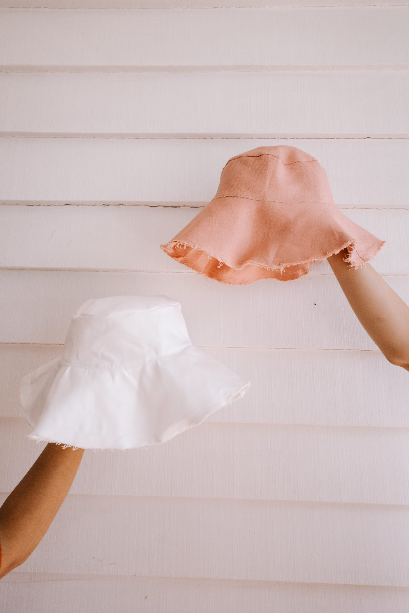

Make This Easy DIY Bucket Hat
Bucket hats have certainly stolen the spotlight recently and we wanted to have a go at putting our own spin on this staple. Whilst we obviously remain faithful to the oh-so-classic straw hat, the ease of a fabric bucket hat that you can fold up in your bag for fun in the sun can’t be denied. Our creation ticks two boxes with a slightly wider brim, in providing extra sun protection as well as a softer shape that we find ultra flattering. We made ours in a pinky-blush thick linen and a cotton drill fabric. It is preferable to start with a sturdier fabric (look for 280gsm or higher) as it gives the hat structure. However if you happen to fall in love with a fabric that is thinner, simply apply iron on interfacing to your fabric before starting to add some structure.
MATERIALS
- 50cm of fabric
- Interfacing* (if using a lighter fabric)
- Matching thread
- Piece of paper or drafting paper
- Pencil
- Quick unpick
- Sewing scissors, general craft scissors
- Measuring tape
* If you use a lighter fabric apply iron on interfacing to the inside of the fabric before you get started.
For this project we have done a one size fits all, but have made it slightly larger so that it fits everyone. If you find that its too big, you can do one or two small darts in the band to make it smaller.
Lets Get Started!
Step 1
Fold the fabric in half with the right sides facing in and trace an 18cm (7 inches) diameter circle. Cut out, resulting in 2 circles. A tip to creating the perfect circle is find an object in your home such as a bowl or vase that is the right size.
Step 2
Create the sides. Take a piece of paper and cut out a rectangle measuring 9cm (3 and a quarter in) x 32cm (12 in). Mark the paper along the long side at 10cm (4 in), 20cm (8 in) and pinch together 1cm (half inch) on either side of your mark, the paper will curve slightly creating template for you to trace onto the fabric.
Step 3
Trace two sets of this onto your fabric (ensuring this is still folded in two layers), pin in place and cut out. You should have 2 sets of 2. Pin the short sides of each pair together, right sides facing each other and sew along the short edge.
Step 4
Next we’re preparing the brim of the hat. Fold your fabric in half again so that you have 4 layers stacked. Locate the raw edge along the bottom, and the double folded edge to one side. We’re using the fold to help create a symmetrical semicircle. From the bottom corner of the folded edge, measure and mark 9cm (3 and three quarter inches) & 20cm (8 inches) from the edge. Continue to pivot the measuring tape in a curve so that you draw out two quarter circles. Pin the fabric together and cut along the lines.
Step 5
Unfold the cut-outs, you should have 2 half moon shapes. Pin these together along the short side. Measure 2cm (1 inch) in from the outside edge of each of your half moon cut-outs. Cut a diagonal line from the inside corner to this 2cm (1 inch) marker to create an tapered angle on the short sides.
Step 6
Sew along the short sides, iron the seams open and repeat steps 4 and 5 to create the second layer of your hat brim.
Step 7
Take one of the side pieces you sewed together in Step 3 and one of the circles you cut in Step 1 for the top of the hat. Open the side panels to form a circle, and pin the top piece along the inside. Make sure that you are pinning this to the inside edge of the side panel with the smaller diameter. Sew together and repeat for your other side piece & top.
Step 8
Similar to the step above, take one outer brim piece at a time and pin the top of the hat to the inside edge. Sew these edges together and repeat for the other top and brim pieces.

Step 9
Carefully snip the round seams at 3cm intervals along the top and brim of the hat so that when they are turned the right way the fabric doesn’t pull.
Step 10
Flip one of the hat pieces the right way out, and the other the wrong way out. Put one inside the other so that you end up with the neat sides facing out on both pieces.
Step 11
Match the edges of the brim and pin around this outside edge. Sew 1cm in from the edge around the whole perimeter.
Step 12
Give the hat a quick iron, then pin the hat together around the bottom edge of the side panels (where the sides meet the brim). Sew along this join 1mm from the edge.